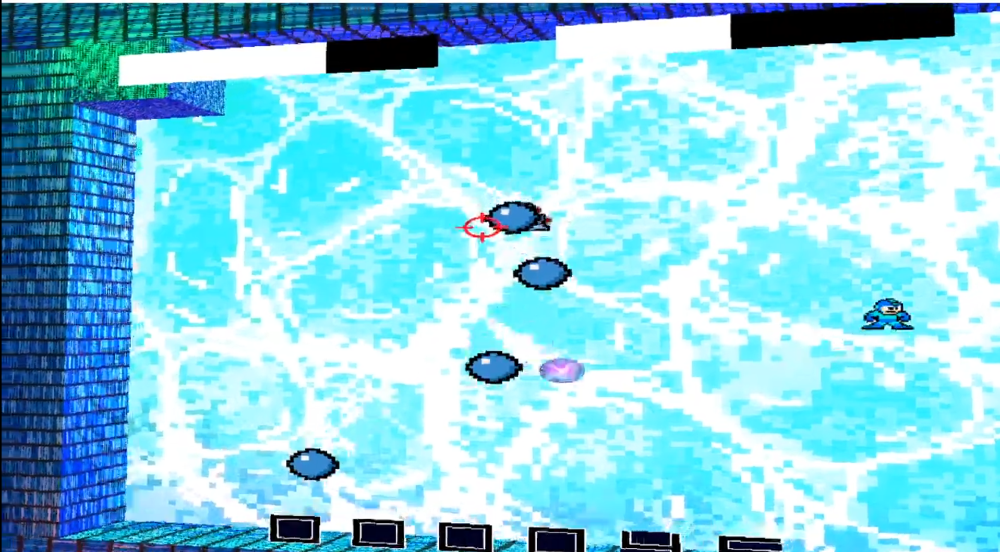
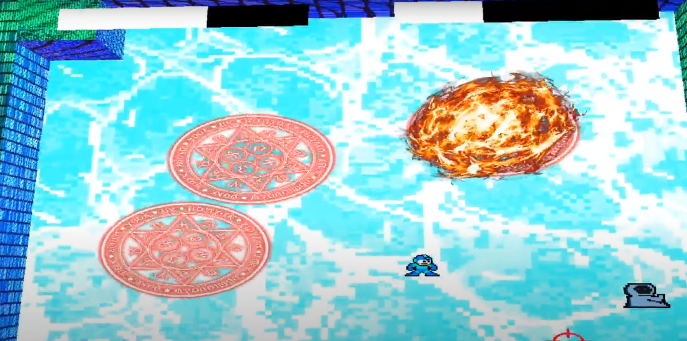

School Project, OpenGL, 3D , C++
Furi Lite is a boss rush game similar to the likes of Maiden & Spell aswell as Furi; created
using Box 2D and Open Gl.
Shader Cube Map Reflection
A basic Cube Map Reflection Shader using Open GL.
// Cube Map Reflection Fragment Shader
uniform samplerCube u_TextureCube;
uniform vec3 u_CameraPosition;
varying vec3 v_SurfaceToWorldPosition;
varying vec3 v_Normal;
varying vec2 v_UV;
varying vec3 v_Cubeuv;
void main()
{
vec3 NormalizedNormal = normalize(v_Normal);
vec3 CubeColor = textureCube( u_TextureCube, v_Cubeuv );
vec3 Surfacepos = v_SurfaceToWorldPosition;
vec3 Direction2Camera = Surfacepos - u_CameraPosition;
vec3 NormalizedDirection2Camera = normalize(Direction2Camera);
vec3 Reflection = reflect(NormalizedDirection2Camera, NormalizedNormal);
vec4 ReflectedColor = texture(u_TextureCube, Reflection);
gl_FragColor = ReflectedColor;
}
----------------------------------------------------------------------------------------
// Cube Map Reflection Vertex Shader
attribute vec4 a_Position;
attribute vec2 a_UV;
attribute vec4 a_Color;
attribute vec3 a_Normal;
uniform mat4 u_WorldMatrix;
uniform mat4 u_ViewMatrix;
uniform mat4 u_ProjMatrix;
uniform vec3 u_CameraPosition;
varying vec3 v_SurfaceToWorldPosition;
varying vec3 v_Normal;
varying vec2 v_UV;
varying vec3 v_Cubeuv;
void main()
{
vec4 objectpos = a_Position;
vec4 worldpos = u_WorldMatrix * objectpos;
vec4 viewpos = u_ViewMatrix * worldpos;
vec4 clippos = u_ProjMatrix * viewpos;
v_UV = a_UV;
v_Cubeuv = objectpos.xyz;
v_Normal = a_Normal;
v_SurfaceToWorldPosition = worldpos.xyz;
gl_Position = clippos;
}
void ProjectileObject::Update(float deltatime)
{
m_ProjectileLifetme -= deltatime;
if (m_Position.z > 0 || m_Position.z < 0)
{
m_Position.z = 0;
}
if (m_ProjectileLifetme <= 0)
{
if (m_pPool)
{
Destroy();
}
}
// Shoots in astraight line
if (m_ProjectileType == Line)
{
if (m_IsShot == false)
{
SetMaterial(m_pMaterial);
float m_Speed = PROJECTILESPEED;
m_Playerpos = m_pPlayerObject->GetPosition();
m_DirectionVector = b2Vec2(m_Playerpos.x - m_Position.x, m_Playerpos.y - m_Position.y);
m_DirectionVector.Normalize();
m_IsShot = true;
}
m_Position += (vec3(m_DirectionVector.x, m_DirectionVector.y, m_Position.z) * m_Speed * deltatime);
this->GetPhysicsBody()->ApplyLinearImpulseToCenter(b2Vec2(m_DirectionVector.x * m_Speed * deltatime, m_DirectionVector.y * m_Speed * deltatime), true);
m_Position.x = this->GetPhysicsBody()->GetPosition().x;
m_Position.y = this->GetPhysicsBody()->GetPosition().y;
}
// Moves slightly towards the player
if (m_ProjectileType == Homing)
{
m_TextureTimer -= deltatime;
if (m_IsShot == false)
{
SetMaterial(m_pGame->GetResourceManager()->GetMaterial("TextureHomingProjectile1"));
float m_Speed = HOMINGPROJECTILESPEED;
m_IsShot = true;
}
if (m_TextureTimer < 0.4f && m_Phase == 0)
{
m_Phase++;
SetMaterial(m_pGame->GetResourceManager()->GetMaterial("TextureHomingProjectile2"));
}
if (m_TextureTimer < 0.3f && m_Phase == 1)
{
m_Phase++;
SetMaterial(m_pGame->GetResourceManager()->GetMaterial("TextureHomingProjectile3"));
}
if (m_TextureTimer < 0.2f && m_Phase == 2)
{
m_Phase++;
SetMaterial(m_pGame->GetResourceManager()->GetMaterial("TextureHomingProjectile4"));
}
if (m_TextureTimer < 0.1f && m_Phase == 3)
{
SetMaterial(m_pGame->GetResourceManager()->GetMaterial("TextureHomingProjectile5"));
}
if (m_TextureTimer < 0)
{
SetMaterial(m_pGame->GetResourceManager()->GetMaterial("TextureHomingProjectile1"));
m_TextureTimer = 0.5;
m_Phase = 0;
}
m_Playerpos = m_pPlayerObject->GetPosition();
m_DirectionVector = b2Vec2(m_Playerpos.x - m_Position.x, m_Playerpos.y - m_Position.y);
m_DirectionVector.Normalize();
//Adding a physics pulse towards the target
m_Position += (vec3(m_DirectionVector.x, m_DirectionVector.y, m_Position.z) * m_Speed * deltatime);
this->GetPhysicsBody()->ApplyLinearImpulseToCenter(b2Vec2(m_DirectionVector.x * m_Speed * deltatime, m_DirectionVector.y * m_Speed * deltatime), true);
m_Position.x = this->GetPhysicsBody()->GetPosition().x;
m_Position.y = this->GetPhysicsBody()->GetPosition().y;
}
}
void ProjectileObject::Reset()
{
Destroy();
}
void ProjectileObject::Destroy()
{
//When Destoryed it removes itself
RemoveFromSceneEvent* pEvent = new RemoveFromSceneEvent(this);
m_pScene->GetGame()->m_EventQueue.push(pEvent);
}
void ProjectileObject::RemoveFromScene()
{
GameObject::RemoveFromScene();
ResetTimers();
//Turn off Physics Bodys
this->GetPhysicsBody()->SetActive(false);
this->GetPhysicsBody()->SetAwake(false);
if (m_pPool)
{
m_pPool->ReturnObject(this);
}
}
void ProjectileObject::ResetTimers()
{
m_IsShot = false;
m_ProjectileLifetme = PROJECTILELIFETIME;
m_Speed = PROJECTILESPEED;
}
Boss AI
Furi Lite was setup to have two different bosses that had different attakcks they could use to fight the player Each action was setup as its own class and when executed it hijacks the positions and executes the action.
Gallery

